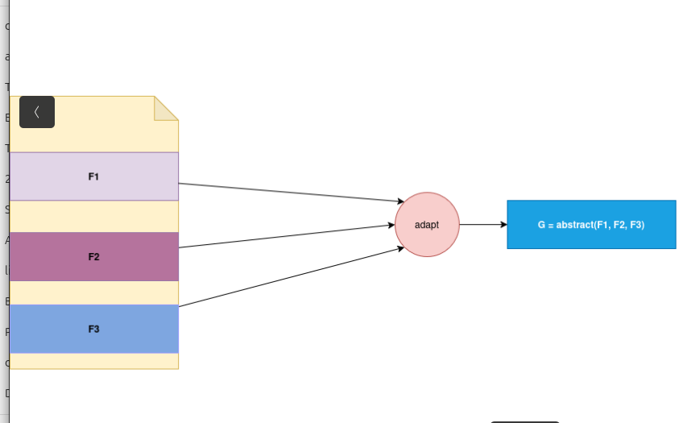
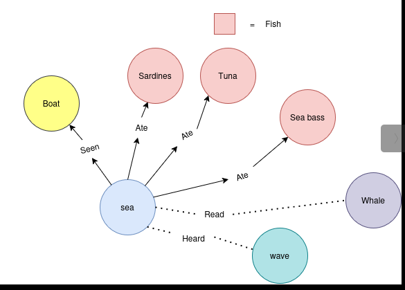
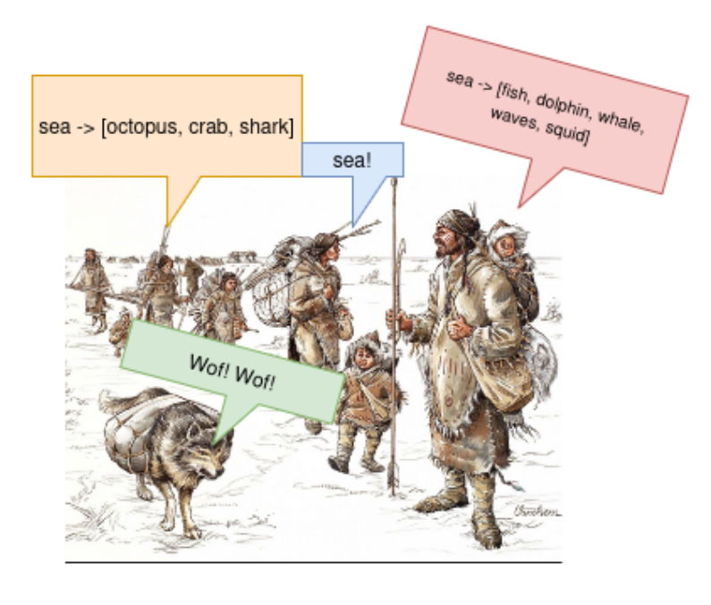

Different views on the function
Structural view - function as the more elaborate description of the entity
In programming language courses and education, the function is viewed as the
block of code that unifies some repeating behaviour. Beginner programmers will
write the code in one block. He will then notice that he is repeating himself
and then he will extract the repeating code to the new function and reduce the
number of letters in his original code. The complexity measure which one could use here is syntax complexity.
I call this operation unify. Figure 1 demonstrates this phenomenon.
.png )
Figure 1) Simple unify operation. Creation of shared memory and pointing to the shared memory. Syntax complexity is decreased.
The operation involves slicing the document into repeating patterns and then unifying
this into one shared memory, which could then be repeatedly called or referred
to. This view of function writing could be called unification with adapting.
In the next step, we have a type of code which is only slightly different from each other, slices
of code are in the same functionality set and they need to be adapted in one
common semantic representation which is then shared. Here we are not only reducing the syntax complexity but unifying the
slightly different functionality to the shared representation.

Figure 2) Abstractioning away differences and unifying
Another motivation for writing function is to label and simplify very complex behaviour so that it is easier to read and work with. We are decluttering
the visual space to be more productive and better understand our work now and in the future. This approach is called the naming approach. We are aligning the
function definition with the human words which will be understood and known in the future. Another argument for having a good function naming is of the social character.
Someone who reads the code doesn't need to read the whole low-level implementation of the
function he can just read the name and the documentation.
Culture
If someone mentioned to the primitive man word "see" he would be able to extend this word to creatures or things with whom he had
direct contact, connection, knowledge or some kind of connection. This is an example of spatial or hierarchical propositional logic.
The main operation of this logic is the modus ponens inference rule (->) which one, in this context, uses for memory compression. It can have social or individual character.
The social one is shown in the Figure 4
This type of logic could also be described as propositional logic on the graphs but it depends on the type of connection as shown on the figure 4.
Each individual has it's own behavioral or associative graph which one uses for expanding the concepts and creating his own threat of thought. To each thought threat
own could apply the emotion based on the direct experience or cultural constructs which could be true or false when applied to him, false for everyone or taboo topic which
is hidden from anyone.

Figure 4) Mapping propositional logic on the coloured graph, each individual possess his own propositional graph based on experience and knowledge
Here is a canonical example of the modus ponuns rule which I call structural:
- Apple has a fresh whole
- Worm digs the whole
- ----------
- There is a worm in the apple
It is structural because the entities of the "whole", "apple" and "worm" already exist and they are not created in the future.

Figure 3) Palaeolithic group and group thought expansion using shared propositional logic
Temporal logic - modus ponens as predictor
Next, we have the temporal logic or the logic which is directed toward predicting what will happen in the future. If the hunter-gatherer sees the animal in the open and observes that there is no enough food or grass with whom
he could feed himself or the herd he predicts that in the next season, the animal will leave the place. In other words, he learned the rule no food -> migration in the future.
Temporal logic with uncertainty has a probability element or implementation of uncertainty. In formal theory, the temporal logic is expanding the common propositional
logic symbols such as ¬ , ∨ , ∧ , → with the:
- Fp = eventually p
- GP = G is always valud
- Xp = next step p is valid
- pUq = p unit q
We could say that temporal linear logic is probably the foundational logic which is used for rational decision making.
Conclusion
In conclusion, this short article wants to demonstrate how function in software engineering could have different views and motivations behind its implementation. We differentiate between structural and constructivist views of the function.
This view of the function is probably the most common one because software engineering is mimicry of real-life phenomena or is used for implementing communication protocols.
The second view of the function is a temporal view, where a function doesn't have a structural character but it is used for implementing the scenario of what will happen next in the future.